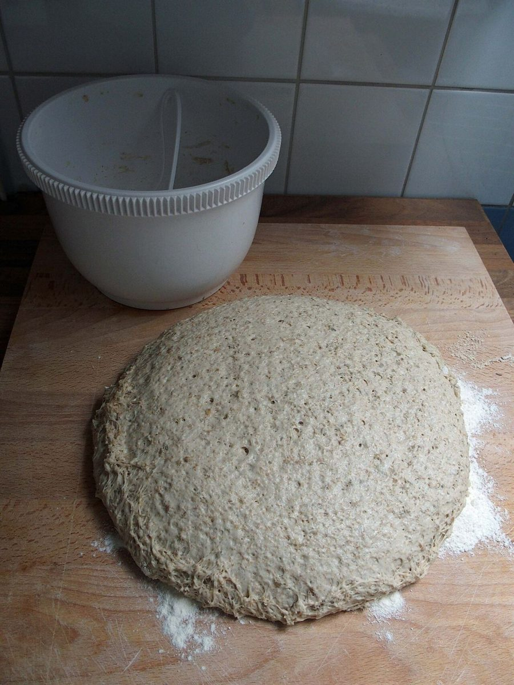
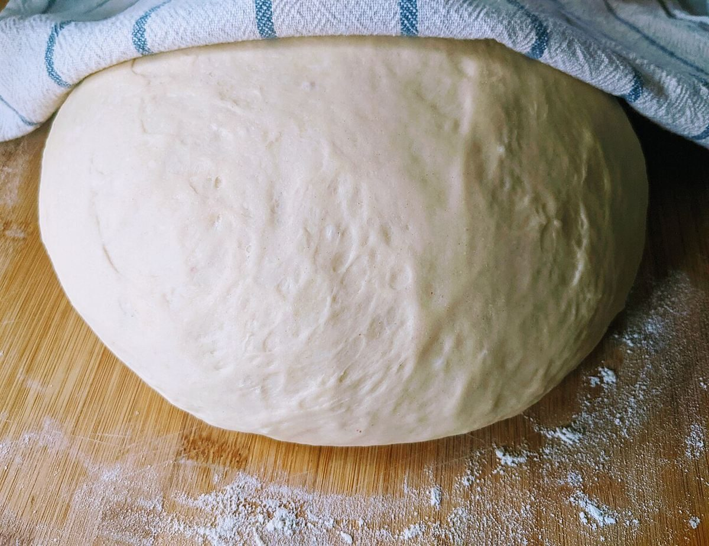
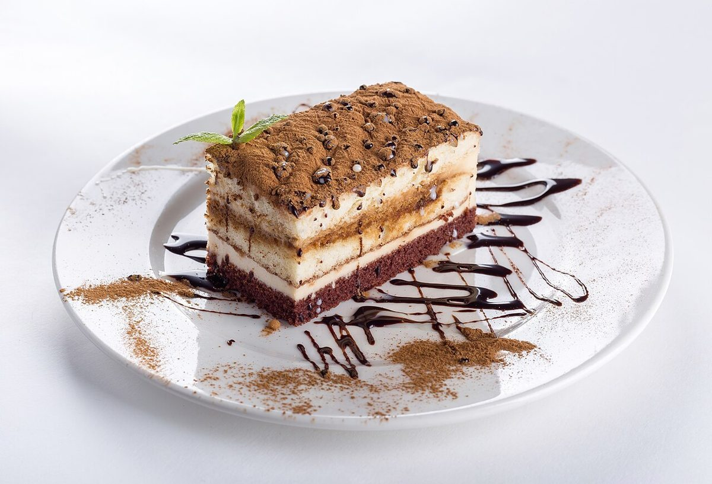
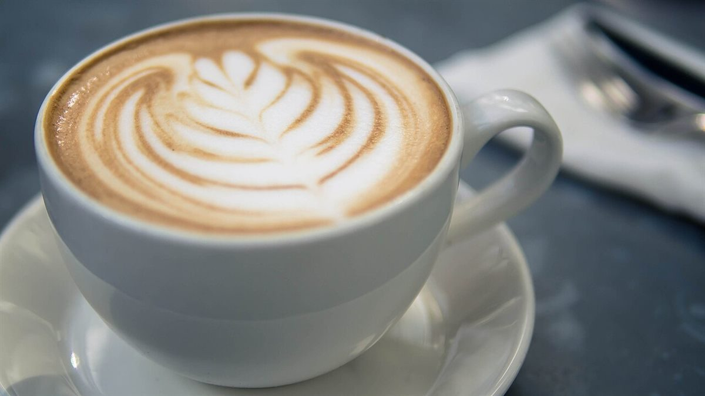

三重県熊野市井戸町 / ベーカリー&カフェ
喫茶 寿BAKERY & CAFE KOTOBUKI
自家製のパンを、朝から。ゆっくり一杯のコーヒーと、ひと切れのケーキと。
写真: Roasted arabica coffee beans Minca / Roger Burger / CC0 1.0(イメージ)
お店のこと
無添加の自家製パンと、あたたかい店内。
掲載サイトの紹介によると、「喫茶 寿」は熊野市井戸町にあるベーカリーカフェで、自家製・無添加のパンを大切にしているお店です。看板メニューはいちごのショコラケーキとカフェオレと紹介されています。店内は温かな雰囲気で、朝から利用でき、駐車場もあります。席数は23席とされています。
情報源: ホットペッパーグルメ「寿」/熊野市のカフェ・喫茶店一覧/Instagram @kotobukipan
店名の意味や開店の経緯は確認できていないため載せていません。見出し・語り口は制作側のイメージです。掲載サイトにより営業時間の表記が異なるため、営業時間は「準備中」としています。


メニュー
パンとケーキ、コーヒーのひととき。
いちごのショコラケーキとカフェオレが看板メニューとして紹介されています。詳細はInstagramなどでご確認ください。下の写真はイメージで、実際の商品ではありません。






口コミ
お客様の声
イメージ例焼きたてのパンの香りに誘われて入りました。コーヒーと一緒に、ゆっくりできました。
ケーキがやさしい甘さで、午後のひと休みにぴったりでした。
席にゆとりがあり、家族連れでも入りやすい雰囲気でした。
上の3件は制作側が作成したイメージ例で、実在のお客様の声ではありません。